Appendix - Climate Departure
gpkg_cd <- "data/gis/climate_departure.gpkg"
aoi <- sf::st_read(gpkg_cd, layer = "aoi", quiet = TRUE)
ecoregions <- sf::st_read(gpkg_cd, layer = "ecoregions", quiet = TRUE)
ecoregions$name_tc <- tools::toTitleCase(tolower(ecoregions$name))
towns <- sf::st_read(gpkg_cd, layer = "towns", quiet = TRUE)
lakes <- sf::st_read(gpkg_cd, layer = "lakes", quiet = TRUE)
rivers <- sf::st_read(gpkg_cd, layer = "rivers", quiet = TRUE)
streams <- sf::st_read(gpkg_cd, layer = "streams", quiet = TRUE)
highways <- sf::st_read(gpkg_cd, layer = "highways", quiet = TRUE)
wsgs <- sf::st_read(gpkg_cd, layer = "wsgs", quiet = TRUE)
cd_data <- readRDS("data/gis/climate_departure.rds")
ts <- cd_data$regional$ts
bl_early <- cd_data$regional$bl
ano <- cd_data$regional$ano
trn <- cd_data$regional$trn
cmp <- cd_data$regional$cmp
cmp_pct <- cd_data$regional$cmp_pct
departure <- terra::rast("data/gis/climate_departure_tmean.tif")
names(departure) <- "Temperature departure"
aoi_km2 <- as.numeric(sum(sf::st_area(sf::st_transform(aoi, 3005)))) / 1e6
aoi_bb <- sf::st_bbox(aoi)Climate departure and fish passage
Stream crossings are the visible structures in a fish-passage inventory: culverts, bridges, weirs, fords. The streams they cross sit inside a climate that is changing — warmer air, shifting snowpack, longer shoulder seasons — and those climate changes set the hydrologic and thermal context the structures pass fish through. A culvert installed in the 1980s is now passing a different hydrograph: earlier freshet, lower late-summer flows, warmer water. The barrier inventory does not see that on its own.
Warmer air drives warmer streams. For the cold-water salmonids the study area supports — bull trout, chinook, mountain whitefish, rainbow trout — that can move habitat in either direction: cold-limited headwaters gain growing-degree-days (larger fish, better overwinter survival, stronger out-migration), while reaches near the upper edge of the thermal niche lose usable habitat. The recovery value of removing a downstream barrier scales with which side of that line each upstream reach sits on. Climate departure tells you which side that is, watershed by watershed.
Beyond temperature, hydrologic timing matters. Earlier and faster snowmelt shifts the freshet weeks earlier in the calendar and compresses the high-flow pulse. That changes design assumptions for crossing structures, and it changes the timing of migration, gravel mobilisation, and off-channel rearing — the in-stream processes barrier removal is meant to restore.
Quantifying departure at the watershed scale lets us carry climate context into barrier prioritisation alongside the structural and biological inputs.
Area of interest
The study area for this climate-departure analysis is the union of seven Freshwater Atlas watershed groups in the upper and central Fraser drainage: Lower Chilako (LCHL), Nechako (NECR), Francois Lake (FRAN), Morkill River (MORK), Upper Fraser (UFRA), Tabor River (TABR), and Willow River (WILL). Together they cover 34,020 km² and span 8 ecoregions (Figure 5.16) — broad climate-physiography zones based on latitude, elevation, and dominant vegetation. We carry that ecoregion partition through the analysis because climate departure can vary across them in ways the regional average hides, then map the ecoregion signal back onto the seven watershed groups at the end of the appendix.
ggplot() +
geom_sf(data = ecoregions, aes(fill = name_tc), color = "grey45",
linewidth = 0.3, alpha = 0.45) +
geom_sf(data = aoi, fill = NA, color = "#2166ac", linewidth = 0.8) +
geom_sf(data = wsgs, fill = NA, color = "black", linewidth = 0.4) +
geom_sf(data = lakes, fill = "#a6bddb", color = "#74a9cf", linewidth = 0.2) +
geom_sf(data = rivers, fill = "#a6bddb", color = "#74a9cf", linewidth = 0.2) +
geom_sf(data = streams, color = "#74a9cf", linewidth = 0.3, alpha = 0.6) +
geom_sf(data = highways, color = "#9c9c9c", linewidth = 0.75) +
geom_sf(data = highways, color = "#ffe585", linewidth = 0.5) +
geom_sf(data = towns, color = "black", size = 2.5) +
ggrepel::geom_label_repel(
data = towns, aes(label = name, geometry = geom),
stat = "sf_coordinates", size = 3.2, fill = "white", alpha = 0.85,
label.padding = unit(0.2, "lines"), min.segment.length = 0
) +
scale_fill_brewer(palette = "Set3", name = "Ecoregion") +
guides(fill = guide_legend(nrow = 3, byrow = TRUE)) +
coord_sf(xlim = c(aoi_bb["xmin"] - 0.4, aoi_bb["xmax"] + 0.4),
ylim = c(aoi_bb["ymin"] - 0.4, aoi_bb["ymax"] + 0.3)) +
labs(subtitle = paste0(format(round(aoi_km2), big.mark = ","),
" km² — ", nrow(ecoregions), " ecoregions, 7 watershed groups")) +
theme_minimal(base_size = 11) +
theme(axis.title = element_blank(),
legend.position = "bottom",
legend.text = element_text(size = 8),
legend.title = element_text(size = 9),
legend.key.size = unit(0.4, "cm"))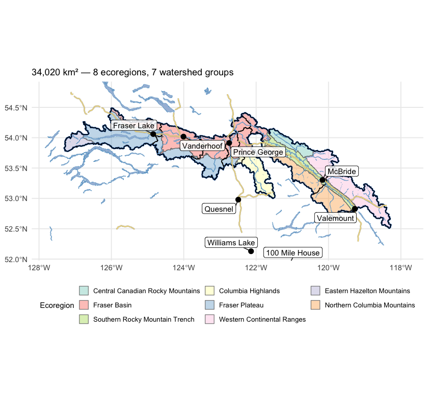
Figure 5.16: Study area in central British Columbia, coloured by ecoregion, with the seven watershed groups (heavy black outlines) that define the analysis extent. The Fraser flows south-east through the interior plateau (Fraser Basin / Fraser Plateau ecoregions) before turning south near Prince George; the eastern WSGs sit in the Western Continental Ranges and adjacent Rocky Mountain ecoregions.
Recent decade versus pre-warming reference
The table below compares two windows directly — the recent decade (2015–2025) against the pre-warming reference (1951–1980). The difference is reported in the variable’s native units, alongside percent change where it is meaningful (precipitation, soil moisture, vapour pressure deficit, relative humidity). Two p-values appear, answering different questions. Δ p (windows) is the Welch t-test on the annual values within each window — this tells us if the recent decade differs from the pre-warming reference. Trend p (75-yr) is the Mann-Kendall test on the full 1951–present series — this tells us if there is a steady year-on-year ramp. Step changes show up as significant Δ p with non-significant trend p; gradual ramps show up as both significant.
trn_p <- trn[trn$trend_start == 1951, c("variable", "period", "mk_pvalue")]
names(trn_p)[3] <- "trend_p"
trn_p$trend_p <- round(trn_p$trend_p, 3)
no_pct_vars <- c("tmean", "tmax", "tmin",
"snow_cover", "snowfall_fraction", "snowmelt_doy_50")
cmp_combined <- cmp
cmp_combined$pct_change <- ifelse(
cmp_combined$variable %in% no_pct_vars,
NA_real_,
round(100 * (cmp_combined$mean_a - cmp_combined$mean_b) / cmp_combined$mean_b, 1)
)
cmp_combined$mean_a <- round(cmp_combined$mean_a, 2)
cmp_combined$mean_b <- round(cmp_combined$mean_b, 2)
cmp_combined$abs_diff <- round(cmp_combined$difference, 2)
cmp_combined$window_p <- round(cmp_combined$p_value, 3)
cmp_combined <- cmp_combined[, c("variable", "period", "mean_a", "mean_b",
"abs_diff", "pct_change", "window_p")]
cmp_combined <- merge(cmp_combined, trn_p,
by = c("variable", "period"), all.x = TRUE)
cmp_combined <- cmp_combined[order(cmp_combined$variable, cmp_combined$period), ]
names(cmp_combined) <- c("Variable", "Period",
"Recent (2015–2025)", "Pre-warming (1951–1980)",
"Δ absolute", "Δ %",
"Δ p (windows)", "Trend p (75-yr)")
kableExtra::kable_styling(
knitr::kable(cmp_combined, label = NA, row.names = FALSE,
caption = "Recent decade (2015-2025) versus pre-warming reference (1951-1980) for all 15 climate variables and all available periods. Two p-values answer different questions — see text."),
bootstrap_options = c("striped", "hover", "condensed")
) |>
kableExtra::scroll_box(height = "420px")| Variable | Period | Recent (2015–2025) | Pre-warming (1951–1980) | Δ absolute | Δ % | Δ p (windows) | Trend p (75-yr) |
|---|---|---|---|---|---|---|---|
| prcp | annual | 970.08 | 942.14 | 27.95 | 3.0 | 0.464 | 0.784 |
| prcp | fall | 294.17 | 269.19 | 24.98 | 9.3 | 0.318 | 0.118 |
| prcp | spring | 182.92 | 183.84 | -0.93 | -0.5 | 0.940 | 0.540 |
| prcp | summer | 255.27 | 243.80 | 11.47 | 4.7 | 0.597 | 0.756 |
| prcp | winter | 237.73 | 245.30 | -7.57 | -3.1 | 0.642 | 0.310 |
| rh | annual | 71.68 | 71.95 | -0.28 | -0.4 | 0.561 | 0.191 |
| rh | fall | 77.09 | 76.48 | 0.61 | 0.8 | 0.448 | 0.749 |
| rh | spring | 65.92 | 67.72 | -1.80 | -2.7 | 0.003 | 0.028 |
| rh | summer | 64.04 | 65.01 | -0.97 | -1.5 | 0.521 | 0.242 |
| rh | winter | 79.65 | 78.60 | 1.06 | 1.3 | 0.161 | 0.224 |
| snow_cover | annual | 55.30 | 59.11 | -3.80 | – | 0.002 | 0.003 |
| snow_cover | fall | 39.24 | 40.42 | -1.19 | – | 0.588 | 0.493 |
| snow_cover | spring | 77.11 | 85.23 | -8.12 | – | 0.001 | 0.002 |
| snow_cover | summer | 7.57 | 13.43 | -5.86 | – | 0.002 | 0.002 |
| snow_cover | winter | 97.29 | 97.34 | -0.05 | – | 0.769 | 0.226 |
| snowfall | annual | 457.51 | 484.38 | -26.87 | -5.5 | 0.263 | 0.272 |
| snowfall | fall | 137.27 | 126.42 | 10.84 | 8.6 | 0.470 | 0.284 |
| snowfall | spring | 94.90 | 116.62 | -21.72 | -18.6 | 0.024 | 0.094 |
| snowfall | summer | 6.25 | 10.59 | -4.35 | -41.0 | 0.026 | 0.022 |
| snowfall | winter | 219.11 | 230.75 | -11.65 | -5.0 | 0.465 | 0.297 |
| snowfall_fraction | annual | 44.85 | 48.56 | -3.72 | – | 0.051 | 0.054 |
| snowmelt | annual | 447.18 | 473.40 | -26.23 | -5.5 | 0.300 | 0.385 |
| snowmelt | fall | 31.24 | 31.05 | 0.19 | 0.6 | 0.963 | 0.749 |
| snowmelt | spring | 282.18 | 238.41 | 43.77 | 18.4 | 0.058 | 0.038 |
| snowmelt | summer | 124.45 | 197.52 | -73.07 | -37.0 | 0.024 | 0.011 |
| snowmelt | winter | 9.31 | 6.42 | 2.89 | 44.9 | 0.276 | 0.448 |
| snowmelt_doy_50 | annual | 126.59 | 138.39 | -11.80 | – | 0.000 | 0.001 |
| snowmelt_rate_peak | annual | 114.02 | 112.51 | 1.52 | 1.3 | 0.830 | 0.694 |
| soil_moisture | annual | 0.34 | 0.34 | 0.00 | -0.8 | 0.355 | 0.176 |
| soil_moisture | fall | 0.34 | 0.34 | 0.00 | -1.1 | 0.555 | 0.323 |
| soil_moisture | spring | 0.35 | 0.35 | 0.00 | 0.7 | 0.317 | 0.337 |
| soil_moisture | summer | 0.33 | 0.34 | -0.01 | -3.0 | 0.104 | 0.026 |
| soil_moisture | winter | 0.33 | 0.33 | 0.00 | 0.1 | 0.931 | 0.708 |
| swe | annual | 137.24 | 151.73 | -14.49 | -9.6 | 0.211 | 0.341 |
| swe | fall | 27.98 | 24.74 | 3.24 | 13.1 | 0.374 | 0.245 |
| swe | spring | 287.88 | 322.97 | -35.09 | -10.9 | 0.185 | 0.245 |
| swe | summer | 19.32 | 40.08 | -20.76 | -51.8 | 0.012 | 0.010 |
| swe | winter | 213.77 | 219.14 | -5.36 | -2.4 | 0.690 | 0.942 |
| swe_max | annual | 380.18 | 400.52 | -20.33 | -5.1 | 0.435 | 0.558 |
| tmax | annual | 6.60 | 5.13 | 1.46 | – | 0.000 | 0.000 |
| tmax | fall | 6.51 | 5.81 | 0.70 | – | 0.086 | 0.238 |
| tmax | spring | 6.74 | 5.06 | 1.68 | – | 0.002 | 0.001 |
| tmax | summer | 18.74 | 16.95 | 1.78 | – | 0.001 | 0.000 |
| tmax | winter | -5.61 | -7.29 | 1.68 | – | 0.007 | 0.000 |
| tmean | annual | 1.86 | 0.22 | 1.64 | – | 0.000 | 0.000 |
| tmean | fall | 2.22 | 1.11 | 1.11 | – | 0.003 | 0.035 |
| tmean | spring | 1.49 | -0.22 | 1.71 | – | 0.001 | 0.000 |
| tmean | summer | 13.15 | 11.15 | 2.00 | – | 0.000 | 0.000 |
| tmean | winter | -9.41 | -11.16 | 1.75 | – | 0.013 | 0.002 |
| tmin | annual | -2.01 | -3.79 | 1.78 | – | 0.000 | 0.000 |
| tmin | fall | -0.96 | -2.41 | 1.45 | – | 0.000 | 0.002 |
| tmin | spring | -2.96 | -4.60 | 1.63 | – | 0.000 | 0.000 |
| tmin | summer | 8.08 | 5.84 | 2.23 | – | 0.000 | 0.000 |
| tmin | winter | -12.18 | -13.98 | 1.80 | – | 0.017 | 0.003 |
| vpd | annual | 2.70 | 2.35 | 0.34 | 14.6 | 0.002 | 0.000 |
| vpd | fall | 1.94 | 1.84 | 0.10 | 5.5 | 0.384 | 0.276 |
| vpd | spring | 2.59 | 2.12 | 0.47 | 22.2 | 0.000 | 0.000 |
| vpd | summer | 5.64 | 4.88 | 0.76 | 15.6 | 0.033 | 0.004 |
| vpd | winter | 0.62 | 0.57 | 0.04 | 7.9 | 0.014 | 0.000 |
The recent decade ran 1.6 °C warmer than the pre-warming reference for annual mean temperature, with both window and trend p-values below 0.001. Vapour pressure deficit rose 0.34 hPa, significant on both tests. Annual precipitation rose about +3 % regionally but neither test confirms a real shift (window p ≈ 0.5, trend p ≈ 0.8). Soil moisture and relative humidity show no significant change. The snowpack rows (swe summer, snowmelt spring, snowmelt winter, snowmelt_doy_50) carry the seasonal-redistribution and freshet-timing signals described below.
Trends over the long record
Anomalies are computed against the 1951–1980 pre-warming reference. Saying a year is “+1.5 °C” means it was 1.5 °C warmer than the average year between 1951 and 1980. The trend table below has two rows per variable — trends computed from two different start years:
- 1951–present (75 years) — the long view. Captures the full magnitude of warming since the pre-warming reference.
- 1981–present (45 years) — starts at the beginning of the current 30-year climate normal (1981–2010), the reference used in most published climate products.
Comparing the two slopes is informative. If the 45-year slope is steeper than the 75-year slope, warming has accelerated; if shallower, warming has slowed (though “slower” almost never means “stopped”). Similar slopes mean a roughly steady rate of change across the full record. Total change is slope multiplied by the number of years — the cumulative shift over the trend window.
kableExtra::kable_styling(
knitr::kable(cd::cd_summary(trn), label = NA,
caption = "Trend statistics for all variables and periods — Theil-Sen slope, Mann-Kendall p-value, and cumulative change over each trend window."),
bootstrap_options = c("striped", "hover", "condensed")
) |>
kableExtra::scroll_box(height = "320px")| Parameter | Period | Slope | Years | Total Change | Unit | p-value |
|---|---|---|---|---|---|---|
| Precipitation | Annual | 0.021 | 75 | 1.6 | % | 0.7837 |
| Relative humidity | Annual | -0.009 | 75 | -0.7 | % | 0.1908 |
| Snow cover | Annual | -0.059 | 75 | -4.4 | % | 0.0026 |
| Snowfall | Annual | -0.102 | 75 | -7.7 | % | 0.2723 |
| Snowfall fraction | Annual | -0.057 | 75 | -4.3 | % | 0.0536 |
| Snowmelt | Annual | -0.077 | 75 | -5.8 | % | 0.3848 |
| Day of 50% melt | Annual | -0.172 | 75 | -12.9 | day | 0.0009 |
| Peak weekly melt rate | Annual | -0.036 | 75 | -2.7 | mm/wk | 0.6940 |
| Soil moisture | Annual | -0.018 | 75 | -1.3 | % | 0.1757 |
| Snow water equivalent | Annual | -0.117 | 75 | -8.8 | % | 0.3414 |
| Annual peak snow water equivalent | Annual | -0.250 | 75 | -18.8 | mm | 0.5582 |
| Maximum temperature | Annual | 0.024 | 75 | 1.8 | °C | 0.0000 |
| Mean temperature | Annual | 0.028 | 75 | 2.1 | °C | 0.0000 |
| Minimum temperature | Annual | 0.030 | 75 | 2.2 | °C | 0.0000 |
| Vapour pressure deficit | Annual | 0.006 | 75 | 0.5 | Pa | 0.0002 |
| Precipitation | Fall | 0.152 | 75 | 11.4 | % | 0.1177 |
| Relative humidity | Fall | 0.003 | 75 | 0.2 | % | 0.7488 |
| Snow cover | Fall | -0.029 | 75 | -2.2 | % | 0.4926 |
| Snowfall | Fall | 0.166 | 75 | 12.4 | % | 0.2844 |
| Snowmelt | Fall | -0.067 | 75 | -5.0 | % | 0.7488 |
| Soil moisture | Fall | -0.020 | 75 | -1.5 | % | 0.3231 |
| Snow water equivalent | Fall | 0.308 | 75 | 23.1 | % | 0.2453 |
| Maximum temperature | Fall | 0.007 | 75 | 0.5 | °C | 0.2379 |
| Mean temperature | Fall | 0.015 | 75 | 1.1 | °C | 0.0346 |
| Minimum temperature | Fall | 0.022 | 75 | 1.6 | °C | 0.0025 |
| Vapour pressure deficit | Fall | 0.002 | 75 | 0.1 | Pa | 0.2763 |
| Precipitation | Spring | 0.070 | 75 | 5.3 | % | 0.5399 |
| Relative humidity | Spring | -0.022 | 75 | -1.7 | % | 0.0275 |
| Snow cover | Spring | -0.117 | 75 | -8.8 | % | 0.0025 |
| Snowfall | Spring | -0.203 | 75 | -15.2 | % | 0.0941 |
| Snowmelt | Spring | 0.242 | 75 | 18.1 | % | 0.0378 |
| Soil moisture | Spring | 0.007 | 75 | 0.5 | % | 0.3367 |
| Snow water equivalent | Spring | -0.141 | 75 | -10.6 | % | 0.2453 |
| Maximum temperature | Spring | 0.026 | 75 | 1.9 | °C | 0.0013 |
| Mean temperature | Spring | 0.027 | 75 | 2.0 | °C | 0.0002 |
| Minimum temperature | Spring | 0.026 | 75 | 2.0 | °C | 0.0000 |
| Vapour pressure deficit | Spring | 0.007 | 75 | 0.5 | Pa | 0.0001 |
| Precipitation | Summer | 0.040 | 75 | 3.0 | % | 0.7558 |
| Relative humidity | Summer | -0.027 | 75 | -2.0 | % | 0.2416 |
| Snow cover | Summer | -0.096 | 75 | -7.2 | % | 0.0016 |
| Snowfall | Summer | -0.562 | 75 | -42.2 | % | 0.0222 |
| Snowmelt | Summer | -0.556 | 75 | -41.7 | % | 0.0110 |
| Soil moisture | Summer | -0.058 | 75 | -4.4 | % | 0.0262 |
| Snow water equivalent | Summer | -0.725 | 75 | -54.4 | % | 0.0101 |
| Maximum temperature | Summer | 0.030 | 75 | 2.3 | °C | 0.0001 |
| Mean temperature | Summer | 0.035 | 75 | 2.6 | °C | 0.0000 |
| Minimum temperature | Summer | 0.037 | 75 | 2.8 | °C | 0.0000 |
| Vapour pressure deficit | Summer | 0.015 | 75 | 1.1 | Pa | 0.0043 |
| Precipitation | Winter | -0.147 | 75 | -11.0 | % | 0.3099 |
| Relative humidity | Winter | 0.014 | 75 | 1.0 | % | 0.2237 |
| Snow cover | Winter | 0.000 | 75 | 0.0 | % | 0.2264 |
| Snowfall | Winter | -0.147 | 75 | -11.0 | % | 0.2970 |
| Snowmelt | Winter | 0.260 | 75 | 19.5 | % | 0.4476 |
| Soil moisture | Winter | -0.004 | 75 | -0.3 | % | 0.7075 |
| Snow water equivalent | Winter | 0.008 | 75 | 0.6 | % | 0.9417 |
| Maximum temperature | Winter | 0.033 | 75 | 2.5 | °C | 0.0002 |
| Mean temperature | Winter | 0.034 | 75 | 2.5 | °C | 0.0015 |
| Minimum temperature | Winter | 0.034 | 75 | 2.6 | °C | 0.0028 |
| Vapour pressure deficit | Winter | 0.001 | 75 | 0.1 | Pa | 0.0003 |
| Precipitation | Annual | 0.193 | 45 | 8.7 | % | 0.1619 |
| Relative humidity | Annual | 0.010 | 45 | 0.4 | % | 0.5122 |
| Snow cover | Annual | -0.007 | 45 | -0.3 | % | 0.8833 |
| Snowfall | Annual | 0.231 | 45 | 10.4 | % | 0.2141 |
| Snowfall fraction | Annual | 0.044 | 45 | 2.0 | % | 0.5122 |
| Snowmelt | Annual | 0.247 | 45 | 11.1 | % | 0.1619 |
| Day of 50% melt | Annual | 0.071 | 45 | 3.2 | day | 0.4873 |
| Peak weekly melt rate | Annual | 0.224 | 45 | 10.1 | mm/wk | 0.3231 |
| Soil moisture | Annual | 0.009 | 45 | 0.4 | % | 0.7692 |
| Snow water equivalent | Annual | 0.222 | 45 | 10.0 | % | 0.4057 |
| Annual peak snow water equivalent | Annual | 1.409 | 45 | 63.4 | mm | 0.1739 |
| Maximum temperature | Annual | 0.014 | 45 | 0.6 | °C | 0.1802 |
| Mean temperature | Annual | 0.018 | 45 | 0.8 | °C | 0.0887 |
| Minimum temperature | Annual | 0.020 | 45 | 0.9 | °C | 0.0251 |
| Vapour pressure deficit | Annual | 0.002 | 45 | 0.1 | Pa | 0.4631 |
| Precipitation | Fall | 0.418 | 45 | 18.8 | % | 0.0834 |
| Relative humidity | Fall | 0.028 | 45 | 1.3 | % | 0.2365 |
| Snow cover | Fall | -0.049 | 45 | -2.2 | % | 0.5122 |
| Snowfall | Fall | 0.305 | 45 | 13.7 | % | 0.3840 |
| Snowmelt | Fall | 0.493 | 45 | 22.2 | % | 0.1802 |
| Soil moisture | Fall | 0.034 | 45 | 1.5 | % | 0.6247 |
| Snow water equivalent | Fall | 0.381 | 45 | 17.1 | % | 0.5377 |
| Maximum temperature | Fall | 0.014 | 45 | 0.6 | °C | 0.2952 |
| Mean temperature | Fall | 0.023 | 45 | 1.0 | °C | 0.0372 |
| Minimum temperature | Fall | 0.031 | 45 | 1.4 | °C | 0.0027 |
| Vapour pressure deficit | Fall | 0.002 | 45 | 0.1 | Pa | 0.5906 |
| Precipitation | Spring | 0.133 | 45 | 6.0 | % | 0.5377 |
| Relative humidity | Spring | -0.006 | 45 | -0.3 | % | 0.8068 |
| Snow cover | Spring | 0.082 | 45 | 3.7 | % | 0.3427 |
| Snowfall | Spring | 0.236 | 45 | 10.6 | % | 0.4513 |
| Snowmelt | Spring | 0.450 | 45 | 20.2 | % | 0.1345 |
| Soil moisture | Spring | -0.012 | 45 | -0.5 | % | 0.5312 |
| Snow water equivalent | Spring | 0.278 | 45 | 12.5 | % | 0.3231 |
| Maximum temperature | Spring | -0.007 | 45 | -0.3 | °C | 0.7321 |
| Mean temperature | Spring | -0.004 | 45 | -0.2 | °C | 0.7841 |
| Minimum temperature | Spring | -0.006 | 45 | -0.3 | °C | 0.7468 |
| Vapour pressure deficit | Spring | 0.002 | 45 | 0.1 | Pa | 0.6179 |
| Precipitation | Summer | -0.083 | 45 | -3.7 | % | 0.7767 |
| Relative humidity | Summer | -0.001 | 45 | 0.0 | % | 0.9766 |
| Snow cover | Summer | -0.015 | 45 | -0.7 | % | 0.7321 |
| Snowfall | Summer | -0.336 | 45 | -15.1 | % | 0.3427 |
| Snowmelt | Summer | -0.051 | 45 | -2.3 | % | 0.8833 |
| Soil moisture | Summer | -0.037 | 45 | -1.6 | % | 0.5122 |
| Snow water equivalent | Summer | 0.005 | 45 | 0.2 | % | 1.0000 |
| Maximum temperature | Summer | 0.026 | 45 | 1.2 | °C | 0.0734 |
| Mean temperature | Summer | 0.027 | 45 | 1.2 | °C | 0.0449 |
| Minimum temperature | Summer | 0.028 | 45 | 1.3 | °C | 0.0050 |
| Vapour pressure deficit | Summer | 0.009 | 45 | 0.4 | Pa | 0.3840 |
| Precipitation | Winter | 0.424 | 45 | 19.1 | % | 0.1739 |
| Relative humidity | Winter | 0.019 | 45 | 0.9 | % | 0.4057 |
| Snow cover | Winter | 0.000 | 45 | 0.0 | % | 0.4848 |
| Snowfall | Winter | 0.383 | 45 | 17.2 | % | 0.2214 |
| Snowmelt | Winter | 0.090 | 45 | 4.1 | % | 0.9221 |
| Soil moisture | Winter | 0.051 | 45 | 2.3 | % | 0.0165 |
| Snow water equivalent | Winter | 0.271 | 45 | 12.2 | % | 0.3044 |
| Maximum temperature | Winter | 0.012 | 45 | 0.5 | °C | 0.5377 |
| Mean temperature | Winter | 0.018 | 45 | 0.8 | °C | 0.4873 |
| Minimum temperature | Winter | 0.014 | 45 | 0.6 | °C | 0.5377 |
| Vapour pressure deficit | Winter | 0.000 | 45 | 0.0 | Pa | 0.7101 |
cd::cd_plot_timeseries(
ano, variable = "tmean", period = "annual", trend = trn,
title = "Annual Mean Temperature Anomaly"
)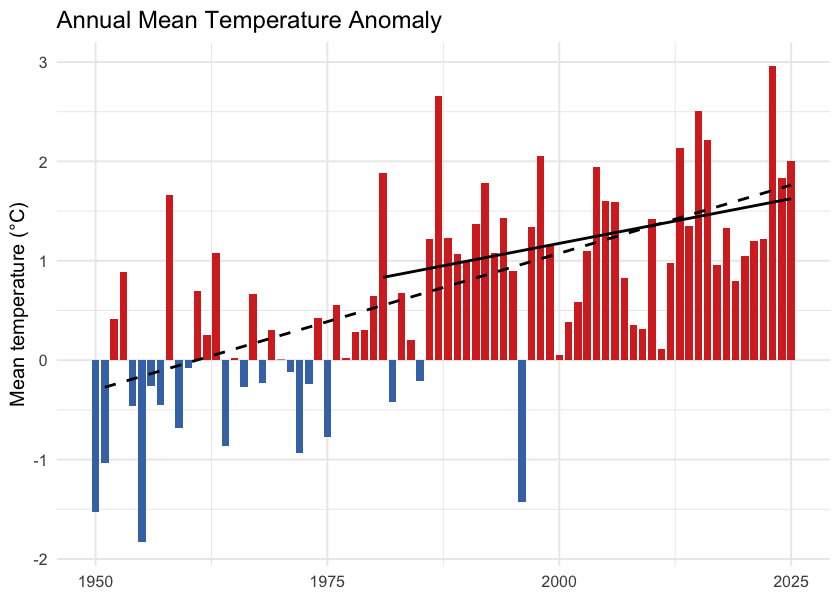
Figure 5.17: Annual mean temperature anomaly relative to the 1951-1980 baseline. Bars are degrees above (red) or below (blue) the pre-warming average; the two trend lines are the 75-year (1951-present, dashed) and 45-year (1981-present, solid) Theil-Sen slopes.
cd::cd_plot_timeseries(
ano, variable = "prcp", period = "annual", trend = trn,
title = "Annual Precipitation Anomaly"
)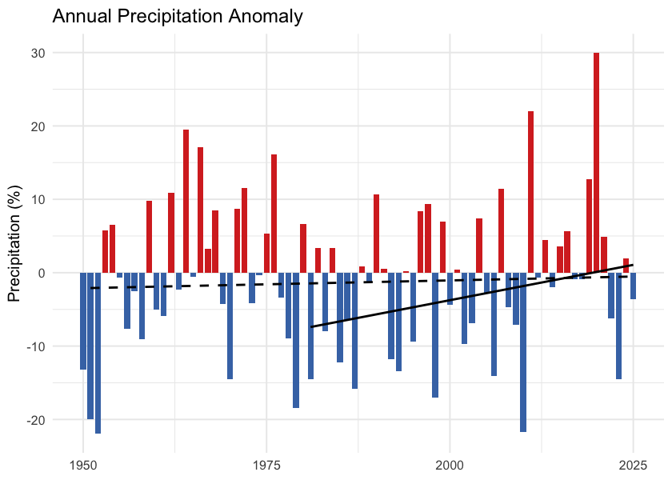
Figure 5.18: Annual precipitation anomaly (% of the 1951-1980 baseline). The long-term trend is essentially flat — regional precipitation has not shifted meaningfully against the natural year-to-year variability.
One pattern in the trend table is worth noting: the 45-year (since 1981) tmean slope is shallower than the 75-year slope — 0.18 versus 0.28 °C per decade. The same direction holds for tmax, tmin, and VPD. Warming since 1981 has not been faster than the longer-term average rate; the cumulative shift since 1951 reflects steady, significant warming rather than a recent acceleration.
Daytime highs and overnight lows
Daytime maximum (tmax) and overnight minimum (tmin) temperatures carry distinct information. Overnight minimums warming faster than daytime maximums — the “day-night asymmetry” — is one of the textbook fingerprints of greenhouse warming. Karl et al. (1993) documented this first at the global scale, finding overnight minimums rose at roughly three times the rate of daytime maximums between 1951 and 1990.
In this study area, the asymmetry is present. Daytime maximums warmed 0.24 °C per decade since 1951 (+1.5 °C cumulative); overnight minimums warmed 0.30 °C per decade (+1.8 °C cumulative). The overnight side warmed about 0.3 °C more than the daytime side over the recent decade, narrowing the diurnal temperature range by the same amount (Figure 5.21). The asymmetry is present but weaker than the canonical signal — the local tmin/tmax warming ratio is about 1.2:1 versus the ~3:1 ratio Karl et al. reported at the global scale between 1951 and 1990.
trn_tmax <- cd::cd_trend(
ano[ano$variable == "tmax" & ano$period == "annual", ],
trend_start = c(1951, 1981)
)
cd::cd_plot_timeseries(ano, variable = "tmax", period = "annual", trend = trn_tmax,
title = "Daytime Maximum (tmax) — Annual Anomaly")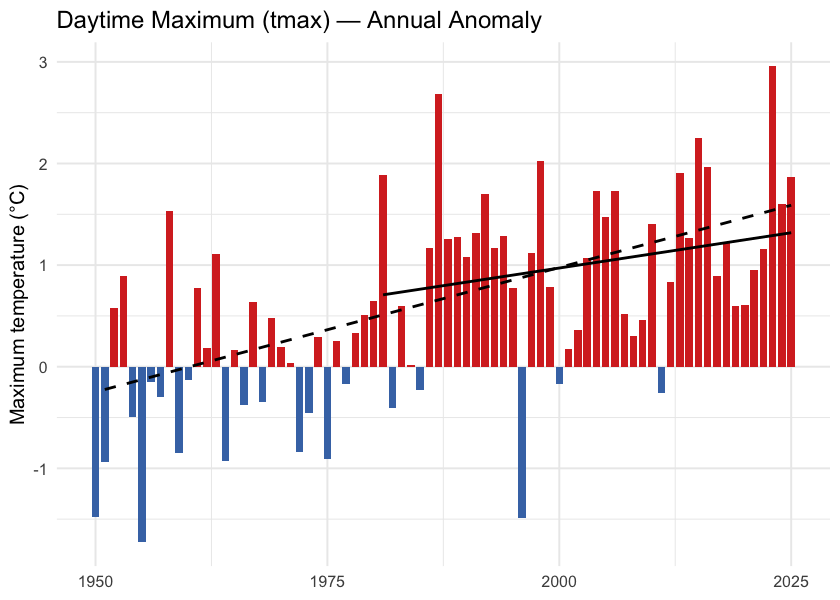
Figure 5.19: Annual daytime maximum temperature (tmax) anomaly relative to the 1951-1980 baseline.
trn_tmin <- cd::cd_trend(
ano[ano$variable == "tmin" & ano$period == "annual", ],
trend_start = c(1951, 1981)
)
cd::cd_plot_timeseries(ano, variable = "tmin", period = "annual", trend = trn_tmin,
title = "Overnight Minimum (tmin) — Annual Anomaly")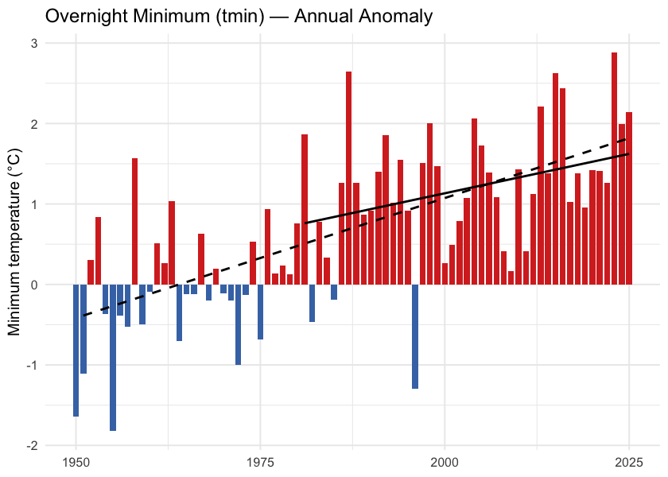
Figure 5.20: Annual overnight minimum temperature (tmin) anomaly relative to the 1951-1980 baseline.
tmax_ts <- ts[ts$variable == "tmax" & ts$period == "annual", c("year", "value")]
tmin_ts <- ts[ts$variable == "tmin" & ts$period == "annual", c("year", "value")]
dtr <- merge(tmax_ts, tmin_ts, by = "year", suffixes = c("_max", "_min"))
dtr$dtr <- dtr$value_max - dtr$value_min
ggplot(dtr, aes(x = year, y = dtr)) +
geom_line(color = "grey50") +
geom_point(color = "grey30", size = 1) +
geom_smooth(method = "lm", se = FALSE, color = "#b2182b", linewidth = 0.8) +
labs(title = "Diurnal Temperature Range",
x = NULL,
y = expression("Daytime maximum minus overnight minimum (" * degree * "C)")) +
theme_minimal(base_size = 11)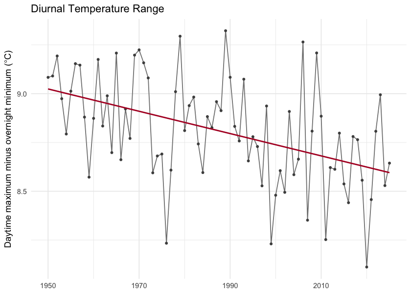
Figure 5.21: Diurnal temperature range (daytime maximum minus overnight minimum) annual mean. The downward slope is the day-night asymmetry — overnight lows are warming faster than daytime highs.
Snowpack
Snowpack drives the seasonal water supply across British Columbia: winter precipitation falls as snow, accumulates on the ground, and releases as meltwater across spring and summer. That seasonal storage is the difference between a late-summer creek that still flows and one that does not. It also sets the timing of the spring freshet — the annual flood pulse that salmonids time their up-river migrations to.
In this study area the snowpack signal is one of earlier melt, not less snow. Total annual snowfall fell by about 6 % but neither tests confirm a real change against year-to-year variability. Where the signal is unambiguous is in when the snow leaves the ground. The midpoint day of annual snowmelt shifted 12 days earlier in the calendar over the same window (p < 0.001), and snow cover dropped 3.8 percentage points (p = 0.002).
Seasonal snowpack curve
Aggregated to the four standard meteorological seasons — winter (December–February), spring (March–May), summer (June–August), and fall (September–November) — the table below compares the recent decade (2015–2025) directly against the pre-warming reference (1951–1980) for each of the four monthly-native snow variables. The seasonal redistribution is the headline. Statistically the load-bearing signals are on the summer side — summer SWE has collapsed (p ≈ 0.01) and summer snowmelt has fallen by a comparable amount (p ≈ 0.02). The counterbalancing winter and spring snowmelt rises are directionally consistent but noisier season-by-season (Welch p ≈ 0.28 and 0.06 respectively) — see the What this means paragraph below for the full reading.
snow_monthly <- c("swe", "snowfall", "snowmelt", "snow_cover")
season_order <- c("winter", "spring", "summer", "fall")
snow_seasonal <- cmp_pct[cmp_pct$variable %in% snow_monthly &
cmp_pct$period %in% season_order, ]
snow_seasonal$period <- factor(snow_seasonal$period, levels = season_order)
snow_seasonal$variable <- factor(snow_seasonal$variable, levels = snow_monthly,
labels = c("SWE (mm)", "Snowfall (mm)",
"Snowmelt (mm)", "Snow cover (%)"))
snow_seasonal <- snow_seasonal[order(snow_seasonal$variable, snow_seasonal$period), ]
snow_seasonal$mean_a <- round(snow_seasonal$mean_a, 1)
snow_seasonal$mean_b <- round(snow_seasonal$mean_b, 1)
snow_seasonal$difference <- round(snow_seasonal$difference, 1)
snow_seasonal <- snow_seasonal[, c("variable", "period", "mean_b",
"mean_a", "difference")]
names(snow_seasonal) <- c("Variable", "Season",
"Pre-warming (1951–1980)",
"Recent (2015–2025)", "Δ %")
kableExtra::kable_styling(
knitr::kable(snow_seasonal, label = NA, row.names = FALSE,
caption = "Seasonal snowpack: recent decade versus pre-warming reference. Summer SWE collapse (-52 %, p ≈ 0.01) and summer snowmelt fall (-37 %, p ≈ 0.02) are the statistically significant signals. Winter (+45 %) and spring (+18 %) snowmelt rises are directionally consistent with the redistribution but do not individually clear statistical significance (Welch p ≈ 0.28 and 0.06)."),
bootstrap_options = c("striped", "hover", "condensed")
)| Variable | Season | Pre-warming (1951–1980) | Recent (2015–2025) | Δ % |
|---|---|---|---|---|
| SWE (mm) | winter | 219.1 | 213.8 | -2.4 |
| SWE (mm) | spring | 323.0 | 287.9 | -10.9 |
| SWE (mm) | summer | 40.1 | 19.3 | -51.8 |
| SWE (mm) | fall | 24.7 | 28.0 | 13.1 |
| Snowfall (mm) | winter | 230.8 | 219.1 | -5.0 |
| Snowfall (mm) | spring | 116.6 | 94.9 | -18.6 |
| Snowfall (mm) | summer | 10.6 | 6.2 | -41.0 |
| Snowfall (mm) | fall | 126.4 | 137.3 | 8.6 |
| Snowmelt (mm) | winter | 6.4 | 9.3 | 44.9 |
| Snowmelt (mm) | spring | 238.4 | 282.2 | 18.4 |
| Snowmelt (mm) | summer | 197.5 | 124.4 | -37.0 |
| Snowmelt (mm) | fall | 31.1 | 31.2 | 0.6 |
Annual snowpack signals
Four derived annual scalars capture the snowpack signals the literature treats as headline metrics for snow hydrology: peak snowpack (Mote et al. 2018, 2005), the date of melt midpoint (Stewart et al. 2005; Cayan et al. 2001), freshet flashiness, and the fraction of precipitation falling as snow (Knowles et al. 2006).
trn_swe_max <- cd::cd_trend(
ano[ano$variable == "swe_max" & ano$period == "annual", ],
trend_start = c(1951, 1981)
)
cd::cd_plot_timeseries(ano, variable = "swe_max", period = "annual",
trend = trn_swe_max,
title = "Annual peak SWE — Anomaly")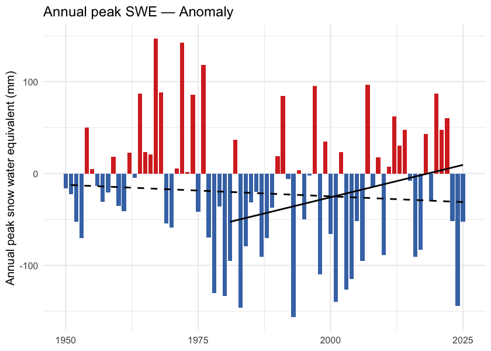
Figure 5.22: Annual peak snow water equivalent (swe_max). ERA5-Land mm SWE, regional spatial mean. The downward trend is present but does not clear statistical significance against year-to-year variability at the regional scale.
trn_doy <- cd::cd_trend(
ano[ano$variable == "snowmelt_doy_50" & ano$period == "annual", ],
trend_start = c(1951, 1981)
)
cd::cd_plot_timeseries(ano, variable = "snowmelt_doy_50", period = "annual",
trend = trn_doy,
title = "Snowmelt 50 % DOY — Anomaly")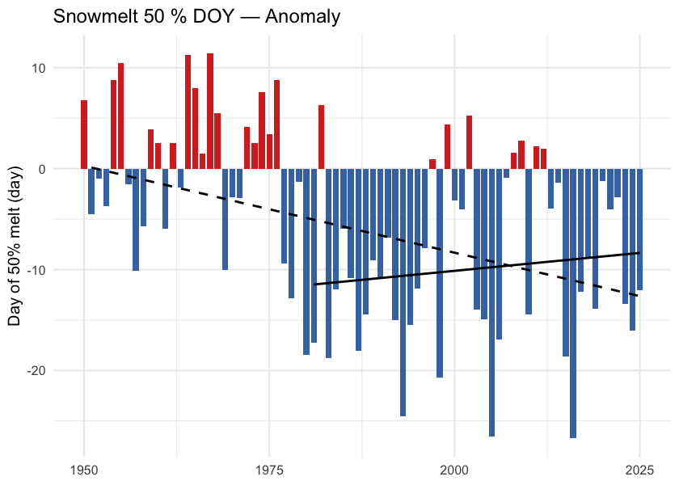
Figure 5.23: Day of year when half the annual snowmelt has accumulated (snowmelt_doy_50). Earlier dates indicate an earlier freshet centroid — directly relevant to crossing-design hydrology and to migration timing. The trend is highly significant (p < 0.001 at the regional scale and in every ecoregion).
trn_rate <- cd::cd_trend(
ano[ano$variable == "snowmelt_rate_peak" & ano$period == "annual", ],
trend_start = c(1951, 1981)
)
cd::cd_plot_timeseries(ano, variable = "snowmelt_rate_peak", period = "annual",
trend = trn_rate,
title = "Peak weekly melt rate — Anomaly")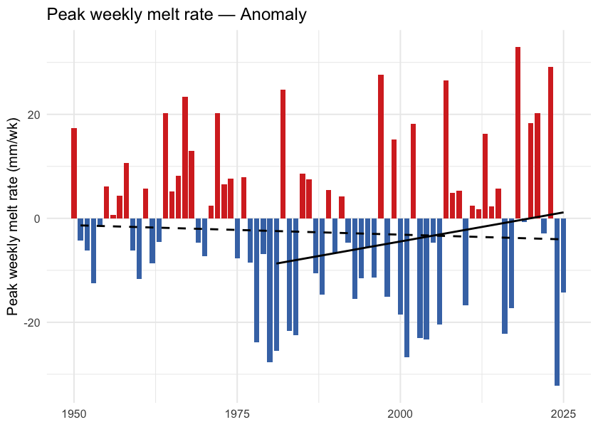
Figure 5.24: Annual maximum of 7-day rolling daily snowmelt (snowmelt_rate_peak). Peak melt intensity has not shifted meaningfully — the freshet is arriving earlier, but its peak rate has not sharpened.
trn_frac <- cd::cd_trend(
ano[ano$variable == "snowfall_fraction" & ano$period == "annual", ],
trend_start = c(1951, 1981)
)
cd::cd_plot_timeseries(ano, variable = "snowfall_fraction", period = "annual",
trend = trn_frac,
title = "Snowfall fraction — Anomaly")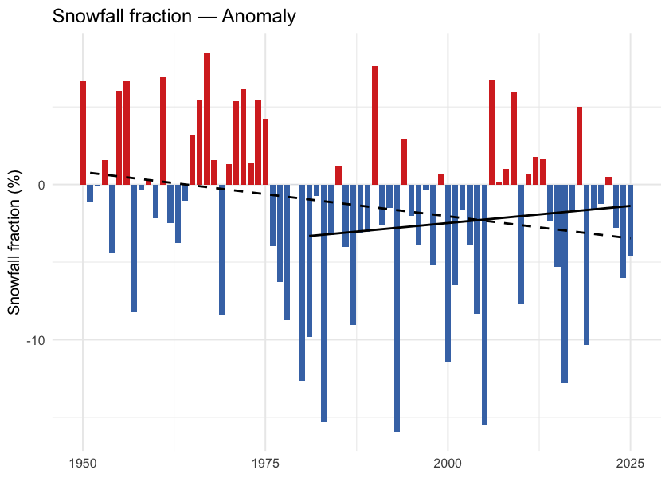
Figure 5.25: Annual snowfall fraction: the percent of annual precipitation that fell as snow. Anomaly is in percentage points relative to the 1951-1980 baseline. The downward trend sits just above statistical significance (Mann-Kendall p ≈ 0.05) — directionally a shift toward rain-dominant precipitation, but not formally significant on either the trend or the recent-vs-baseline window test.
What this means
Three findings carry the snowpack story.
Snow is leaving the region earlier each year, not falling less. Annual snowfall fell about 6 % and annual SWE about 10 %, but neither change clears statistical significance against year-to-year variability. The clear signals are in timing: the snowmelt midpoint shifted nearly two weeks earlier (p < 0.001 regionally and in every ecoregion), snow cover declined 3.8 percentage points (p = 0.002), and snowfall fraction edged down 3.7 pp (Welch and Mann-Kendall p both just above 0.05 — directionally consistent with a shift toward rain-dominant precipitation, but just shy of statistical significance). This matches in direction the broader Pacific-Northwest signal documented since Mote et al. (2005).
Melt is shifting earlier. The unambiguous signals are on the summer side and at the midpoint: summer snowmelt fell 37 % (p ≈ 0.02), summer SWE collapsed 52 % (p ≈ 0.01), and the annual snowmelt midpoint moved ~12 days earlier (p < 0.001). Apparent rises in spring snowmelt (+18 %, Welch p ≈ 0.06) and winter snowmelt (+45 %, Welch p ≈ 0.28) mirror this redistribution but are noisier season- by-season — winter and spring have smaller absolute snowmelt volumes, so the same shifts produce larger relative-change variance. The total annual melt has not changed; its centre of mass has moved earlier. This is consistent in direction with the 1–4 week earlier streamflow timing across western North America documented by Stewart et al. (2005) and with the ~10-day earlier Fraser freshet at Hope Kang et al. (2016).
Summer SWE has dropped sharply. Summer SWE fell 52 %. The high-elevation snowpack that historically lingered through the warmest weeks of the year no longer carries the same volume — reducing the late-season cold-water input to streams during the window when stream-temperature stress on cold-water salmonids is highest.
Spatial pattern of warming
The regional zonal mean reduces an AOI this size to a single number; the spatial pattern carries the rest of the story.
Warming is not spatially uniform. Individual grid cells range from about +1.1 to +2.0 °C across the AOI, and ecoregion means span +1.4 to +2.0 °C (Figure 5.26). The dominant axis runs west-warm to east-cool — the lower-elevation interior plateau ecoregions (Fraser Basin, Fraser Plateau) warmed roughly 0.5 °C more than the high-elevation Western Continental Ranges and adjacent eastern Rocky Mountain ecoregions. A secondary south-to-north component adds about 0.4 °C of additional warming in the northern part of the AOI, consistent with high-latitude amplification. The eastern Rocky Mountain ecoregions show a thermal-buffer effect — likely a combination of slower warming at elevation and a weaker snow-albedo feedback where snow persists longer. The implication for fish passage is geographic: barrier reaches in the interior-plateau WSGs (LCHL, NECR, TABR, FRAN) sit on the warmer side of the gradient; reaches in the eastern WSGs (UFRA, MORK) sit on the cooler side.
ggplot() +
geom_spatraster(data = departure) +
geom_sf(data = ecoregions, fill = NA, color = "grey25",
linewidth = 0.4, linetype = "dashed") +
geom_sf(data = aoi, fill = NA, color = "black", linewidth = 0.6) +
geom_sf(data = lakes, fill = NA, color = "grey40", linewidth = 0.2) +
geom_sf(data = highways, color = "#9c9c9c", linewidth = 0.6) +
geom_sf(data = highways, color = "#ffe585", linewidth = 0.4) +
geom_sf(data = towns, color = "black", size = 2) +
ggrepel::geom_label_repel(
data = towns, aes(label = name, geometry = geom),
stat = "sf_coordinates", size = 3, fill = "white", alpha = 0.8
) +
scale_fill_distiller(palette = "RdBu", direction = -1,
name = expression(Delta * degree * C)) +
coord_sf(xlim = c(aoi_bb["xmin"], aoi_bb["xmax"]),
ylim = c(aoi_bb["ymin"], aoi_bb["ymax"])) +
labs(title = "Temperature Departure (2015-2025 vs 1951-1980)") +
theme_minimal(base_size = 11) +
theme(axis.title = element_blank())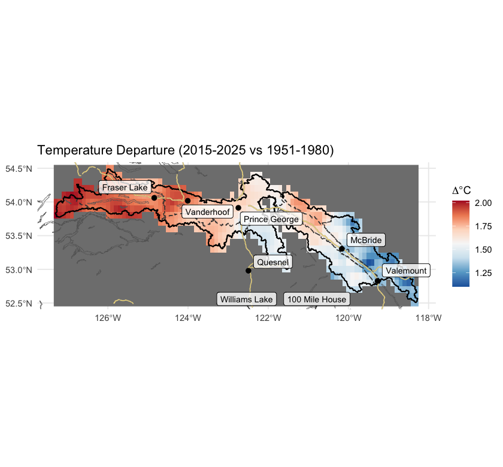
Figure 5.26: Spatial pattern of annual mean temperature departure across the AOI (2015-2025 mean minus 1951-1980 mean, degrees C). The dominant axis runs west-warm (interior plateau) to east-cool (Rocky Mountain ranges), with a secondary south-to-north amplification.
Per-ecoregion variation
The regional zonal mean averages over eight ecoregions with very different elevations and exposures. Running the same pipeline on each ecoregion polygon tests whether the regional story holds within each one, and where it does not.
All eight ecoregions warmed significantly (Mann-Kendall p < 0.001 for tmean in every ecoregion). The interior-plateau ecoregions (Fraser Basin, Fraser Plateau) and the northern Eastern Hazelton Mountains lead at +1.7 to +2.0 °C cumulative; the high-elevation Western Continental Ranges trail at +1.4 °C. The day-night asymmetry (tmin > tmax) holds in every ecoregion. Vapour pressure deficit rose significantly (p < 0.05) in every ecoregion.
Precipitation is the variable that does not move. Unlike some other BC regions where the long-term precipitation trend is significant in a subset of ecoregions, here annual precipitation shows no significant trend in any of the eight ecoregions (Mann- Kendall p ranges 0.19 to 0.91). The climate signal for this study area is unambiguously about temperature and snowpack timing, not about precipitation magnitude.
ggplot(ano_all[ano_all$variable == "tmean" & ano_all$period == "annual", ],
aes(x = year, y = anomaly)) +
geom_col(aes(fill = anomaly >= 0), width = 0.85, show.legend = FALSE) +
geom_segment(data = trn_segs_tmean,
aes(x = x_start, xend = x_end, y = y_start, yend = y_end,
linetype = window),
inherit.aes = FALSE, color = "black", linewidth = 0.6) +
scale_fill_manual(values = c(`TRUE` = "#d73027", `FALSE` = "#4575b4")) +
scale_linetype_manual(values = c("dashed", "solid"), name = "Trend window") +
facet_wrap(~ ecoregion, ncol = 3,
labeller = labeller(ecoregion = er_labels)) +
labs(x = NULL, y = expression("Mean temperature anomaly (" * degree * C * ")")) +
theme_minimal(base_size = 10) +
theme(legend.position = "bottom",
strip.text = element_text(size = 8))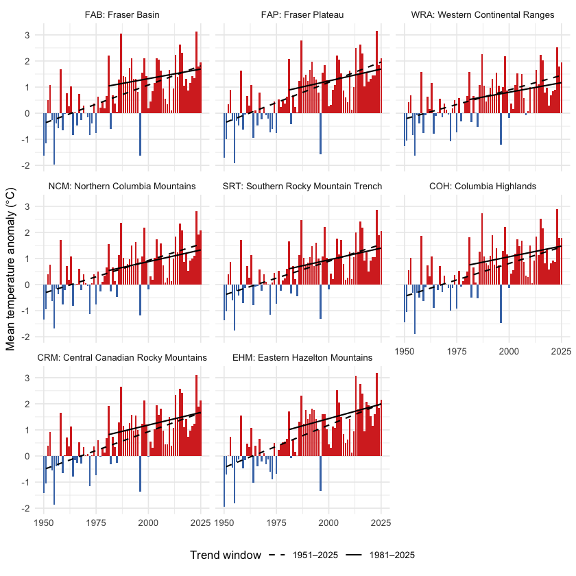
Figure 5.27: Annual mean temperature anomaly relative to the 1951-1980 baseline, by ecoregion. Dashed line is the 75-year Theil-Sen trend (1951-present); solid line is the 45-year trend (1981-present). A solid line steeper than the dashed line indicates accelerating warming — note that across this AOI, the 45-year slope is generally shallower than the 75-year slope, meaning recent warming has not been faster than the long-term rate.
ggplot(ano_all[ano_all$variable == "prcp" & ano_all$period == "annual", ],
aes(x = year, y = anomaly)) +
geom_col(aes(fill = anomaly >= 0), width = 0.85, show.legend = FALSE) +
geom_segment(data = trn_segs_prcp,
aes(x = x_start, xend = x_end, y = y_start, yend = y_end,
linetype = window),
inherit.aes = FALSE, color = "black", linewidth = 0.6) +
scale_fill_manual(values = c(`TRUE` = "#4575b4", `FALSE` = "#d73027")) +
scale_linetype_manual(values = c("dashed", "solid"), name = "Trend window") +
facet_wrap(~ ecoregion, ncol = 3,
labeller = labeller(ecoregion = er_labels)) +
labs(x = NULL, y = "Precipitation anomaly (% of baseline)") +
theme_minimal(base_size = 10) +
theme(legend.position = "bottom",
strip.text = element_text(size = 8))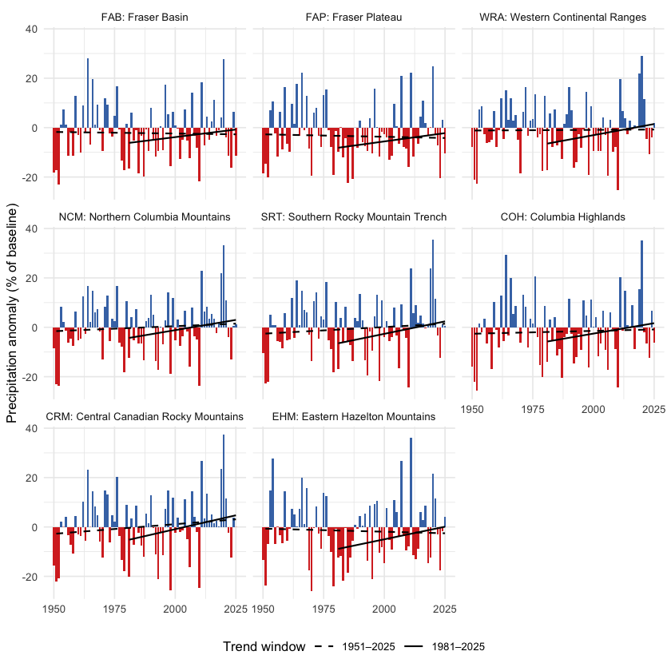
Figure 5.28: Annual precipitation anomaly (% of the 1951-1980 baseline) by ecoregion. None of the eight ecoregions shows a statistically significant precipitation trend over the full record.
Snow by ecoregion
Two snow metrics are worth viewing per-ecoregion: peak SWE (annual snowpack magnitude) and DOY-50 (the day-of-year by which half the year’s snowmelt has already happened — earlier values mean an earlier freshet). The peak-SWE signal is noisy at the per- ecoregion scale — none of the eight ecoregions clears statistical significance for the long-term swe_max trend. The DOY-50 signal, in contrast, is highly significant in every ecoregion (Mann- Kendall p < 0.01 in each), with shifts ranging from -1.4 to -2.1 days per decade. Earlier melt is universal across the AOI.
ggplot(ano_all[ano_all$variable == "swe_max" & ano_all$period == "annual", ],
aes(x = year, y = anomaly)) +
geom_col(aes(fill = anomaly >= 0), width = 0.85, show.legend = FALSE) +
geom_segment(data = trn_segs_swe_max,
aes(x = x_start, xend = x_end, y = y_start, yend = y_end,
linetype = window),
inherit.aes = FALSE, color = "black", linewidth = 0.6) +
scale_fill_manual(values = c(`TRUE` = "#4575b4", `FALSE` = "#d73027")) +
scale_linetype_manual(values = c("dashed", "solid"), name = "Trend window") +
facet_wrap(~ ecoregion, ncol = 3,
labeller = labeller(ecoregion = er_labels)) +
labs(x = NULL, y = "Peak SWE anomaly (mm)") +
theme_minimal(base_size = 10) +
theme(legend.position = "bottom",
strip.text = element_text(size = 8))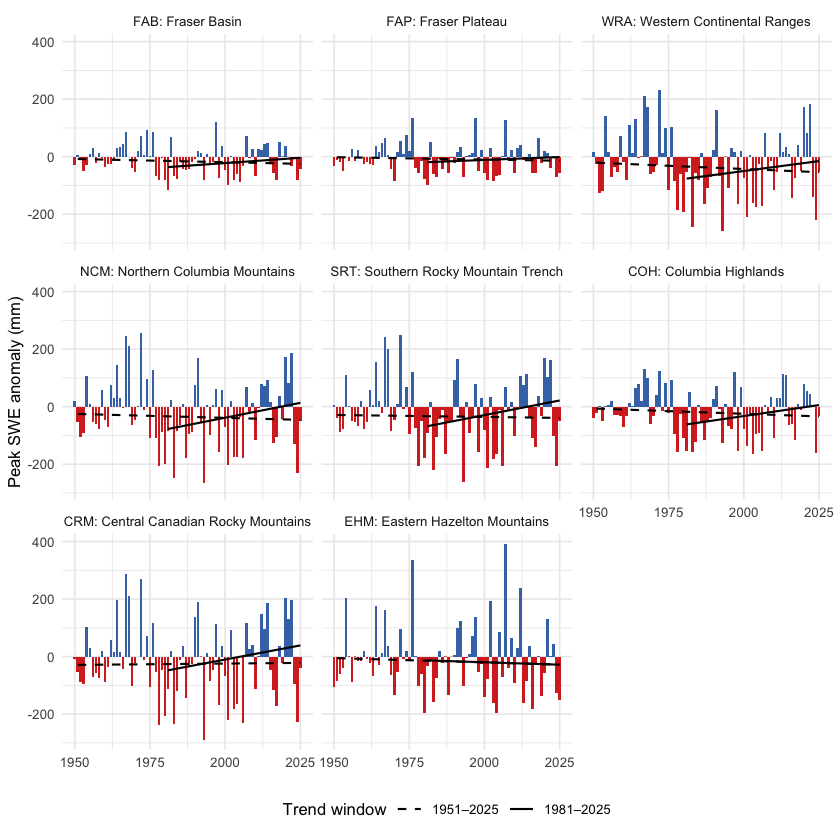
Figure 5.29: Annual peak SWE anomaly by ecoregion, relative to the 1951-1980 baseline. Year-to-year variability is large; the long-term trend is not statistically significant in any single ecoregion.
ggplot(ano_all[ano_all$variable == "snowmelt_doy_50" & ano_all$period == "annual", ],
aes(x = year, y = anomaly)) +
geom_col(aes(fill = anomaly >= 0), width = 0.85, show.legend = FALSE) +
geom_segment(data = trn_segs_doy_50,
aes(x = x_start, xend = x_end, y = y_start, yend = y_end,
linetype = window),
inherit.aes = FALSE, color = "black", linewidth = 0.6) +
scale_fill_manual(values = c(`TRUE` = "#d73027", `FALSE` = "#4575b4")) +
scale_linetype_manual(values = c("dashed", "solid"), name = "Trend window") +
facet_wrap(~ ecoregion, ncol = 3,
labeller = labeller(ecoregion = er_labels)) +
labs(x = NULL, y = "DOY-50 anomaly (days; negative = earlier melt)") +
theme_minimal(base_size = 10) +
theme(legend.position = "bottom",
strip.text = element_text(size = 8))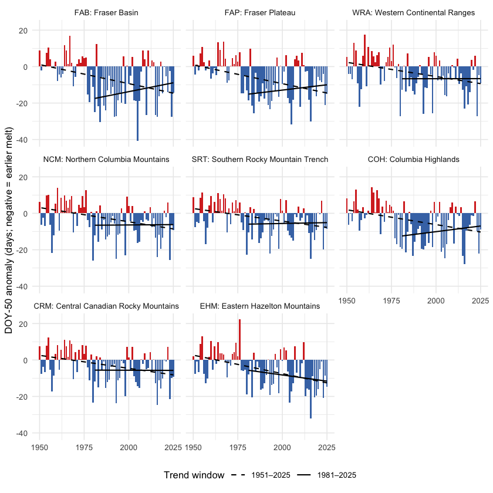
Figure 5.30: Snowmelt 50 % day-of-year (DOY-50) anomaly by ecoregion, relative to the 1951-1980 baseline. Negative values (red) mean the freshet midpoint shifted earlier in the year. The trend is highly significant in every ecoregion.
get_75 <- function(trn_er, var) {
trn_er[trn_er$variable == var & trn_er$period == "annual"
& trn_er$trend_start == 1951, ]
}
get_pct <- function(cmp_er, var) {
if (var %in% cmp_er$variable) {
cmp_er$difference[cmp_er$variable == var & cmp_er$period == "annual"]
} else NA_real_
}
rollup <- do.call(rbind, lapply(er_codes_ordered, function(er) {
res <- cd_data$ecoregion[[er]]
tmean <- get_75(res$trn, "tmean")
tmax <- get_75(res$trn, "tmax")
tmin <- get_75(res$trn, "tmin")
prcp <- get_75(res$trn, "prcp")
vpd <- get_75(res$trn, "vpd")
data.frame(
Ecoregion = er,
`tmean °C/dec` = round(10 * tmean$slope, 2),
`tmax °C/dec` = round(10 * tmax$slope, 2),
`tmin °C/dec` = round(10 * tmin$slope, 2),
`prcp mm/yr` = round(prcp$slope, 3),
`prcp p` = round(prcp$mk_pvalue, 3),
`vpd hPa/dec` = round(10 * vpd$slope, 3),
`vpd p` = round(vpd$mk_pvalue, 3),
`prcp % change` = round(get_pct(res$cmp_pct, "prcp"), 1),
`soil moisture % chg` = round(get_pct(res$cmp_pct, "soil_moisture"), 1),
check.names = FALSE
)
}))
kableExtra::kable_styling(
knitr::kable(rollup, row.names = FALSE, label = NA,
caption = "Per-ecoregion roll-up over the 75-year window (1951-present): annual mean / daytime maximum / overnight minimum temperature trends (°C per decade); annual precipitation trend (mm per year) and Mann-Kendall p-value; annual vapour pressure deficit trend (hPa per decade) and p-value; and recent (2015-2025) vs pre-warming (1951-1980) percent change for precipitation and soil moisture. All temperature p-values are below 0.001. A tmin slope greater than the tmax slope indicates the day-night asymmetry."),
bootstrap_options = c("striped", "hover", "condensed")
) |>
kableExtra::scroll_box(height = "320px")| Ecoregion | tmean °C/dec | tmax °C/dec | tmin °C/dec | prcp mm/yr | prcp p | vpd hPa/dec | vpd p | prcp % change | soil moisture % chg |
|---|---|---|---|---|---|---|---|---|---|
| FAB | 0.29 | 0.27 | 0.32 | -0.013 | 0.812 | 0.082 | 0.000 | 0.4 | -1.2 |
| FAP | 0.31 | 0.28 | 0.33 | -0.020 | 0.770 | 0.086 | 0.000 | 0.1 | -1.3 |
| WRA | 0.22 | 0.19 | 0.26 | 0.005 | 0.905 | 0.031 | 0.011 | 4.4 | -0.2 |
| NCM | 0.25 | 0.21 | 0.28 | 0.041 | 0.448 | 0.042 | 0.004 | 5.3 | -0.2 |
| SRT | 0.26 | 0.22 | 0.29 | 0.054 | 0.328 | 0.046 | 0.003 | 5.8 | 0.0 |
| COH | 0.25 | 0.22 | 0.28 | 0.023 | 0.687 | 0.056 | 0.003 | 2.7 | -0.6 |
| CRM | 0.29 | 0.25 | 0.32 | 0.078 | 0.185 | 0.046 | 0.001 | 6.4 | 0.0 |
| EHM | 0.32 | 0.30 | 0.33 | -0.025 | 0.756 | 0.073 | 0.000 | 0.5 | -2.1 |
Ecoregion codes: FAB — Fraser Basin; FAP — Fraser Plateau; WRA — Western Continental Ranges; NCM — Northern Columbia Mountains; SRT — Southern Rocky Mountain Trench; COH — Columbia Highlands; CRM — Central Canadian Rocky Mountains; EHM — Eastern Hazelton Mountains.
Watershed groups across ecoregions
The study area is reported and managed at the watershed-group scale — the British Columbia Freshwater Atlas hydrological reporting unit, and the unit that drives barrier prioritisation in this report. The seven watershed groups (LCHL, NECR, FRAN, MORK, UFRA, TABR, WILL) span the eight ecoregions in different ways: some sit cleanly within one or two, others split across several (Figure 5.31). The table that follows gives, for each watershed group, the share of its area falling in each ecoregion — the cross-reference that maps the regional and ecoregion climate signals onto the per-watershed prioritisation unit.
wsg_centroids <- suppressWarnings(sf::st_centroid(wsgs))
ggplot() +
geom_sf(data = ecoregions, aes(fill = name_tc), color = "grey45",
linewidth = 0.3, alpha = 0.45) +
geom_sf(data = aoi, fill = NA, color = "#2166ac", linewidth = 0.8) +
geom_sf(data = wsgs, fill = NA, color = "grey25", linewidth = 0.4) +
ggrepel::geom_label_repel(
data = wsg_centroids,
aes(label = code, geometry = geom),
stat = "sf_coordinates",
size = 3, fill = "white", alpha = 0.85,
label.padding = unit(0.15, "lines"),
min.segment.length = 0
) +
scale_fill_brewer(palette = "Set3", name = "Ecoregion") +
guides(fill = guide_legend(nrow = 3, byrow = TRUE)) +
coord_sf(xlim = c(aoi_bb["xmin"] - 0.4, aoi_bb["xmax"] + 0.4),
ylim = c(aoi_bb["ymin"] - 0.4, aoi_bb["ymax"] + 0.3)) +
labs(title = "Watershed Groups on Ecoregion Backdrop") +
theme_minimal(base_size = 11) +
theme(axis.title = element_blank(),
legend.position = "bottom",
legend.text = element_text(size = 8),
legend.title = element_text(size = 9),
legend.key.size = unit(0.4, "cm"))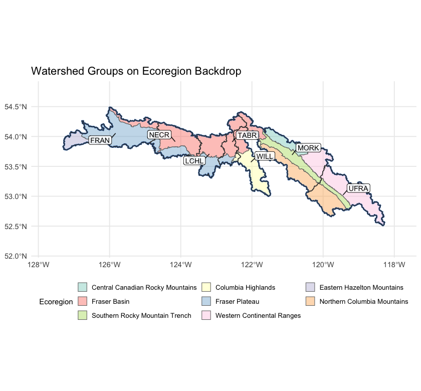
Figure 5.31: Watershed groups in the study area, labelled with their codes, on top of ecoregion fills. LCHL / NECR / TABR sit dominantly in the interior plateau ecoregions (FAB, FAP); FRAN extends into the Eastern Hazelton Mountains; WILL sits dominantly in the Columbia Highlands; UFRA and MORK reach into the Western Continental Ranges and adjacent Rocky Mountain ecoregions.
wsg_xref <- read.csv("data/gis/climate_departure_wsg_ecoregion.csv",
check.names = FALSE)
names(wsg_xref) <- c("Code", "Name", "km²",
sub("_pct$", " %", names(wsg_xref)[-(1:3)]))
kableExtra::kable_styling(
knitr::kable(wsg_xref, label = NA, row.names = FALSE,
caption = "Watershed groups in the study area with the percent of each group's area falling in each of the eight ecoregions. Rows where one ecoregion is at or near 100 % indicate watershed groups contained within a single climate-physiography zone; rows split across two or more ecoregions indicate watershed groups whose climate departure can pull from more than one regional pattern. MORK in particular spans six ecoregions, reaching from the Fraser Basin into the Western Continental Ranges."),
bootstrap_options = c("striped", "hover", "condensed")
) |>
kableExtra::scroll_box(height = "320px")| Code | Name | km² | FAB % | FAP % | WRA % | NCM % | SRT % | COH % | CRM % | EHM % |
|---|---|---|---|---|---|---|---|---|---|---|
| FRAN | Francois Lake | 6574 | 12.9 | 72.5 | 0.0 | 0.0 | 0.0 | 0.0 | 0.0 | 14.5 |
| LCHL | Lower Chilako River | 3139 | 57.2 | 42.8 | 0.0 | 0.0 | 0.0 | 0.0 | 0.0 | 0.0 |
| MORK | Morkill River | 8203 | 9.9 | 0.0 | 20.9 | 28.9 | 22.7 | 0.8 | 16.8 | 0.0 |
| NECR | Nechako River | 4146 | 70.6 | 29.4 | 0.0 | 0.0 | 0.0 | 0.0 | 0.0 | 0.0 |
| TABR | Tabor River | 2004 | 74.7 | 18.0 | 0.0 | 0.0 | 0.0 | 7.3 | 0.0 | 0.0 |
| UFRA | Upper Fraser River | 6743 | 0.0 | 0.0 | 58.7 | 31.9 | 9.4 | 0.0 | 0.0 | 0.0 |
| WILL | Willow River | 3179 | 29.3 | 0.0 | 0.0 | 0.0 | 0.0 | 70.7 | 0.0 | 0.0 |
Interpretation for fish passage
Four findings tie the regional climate-departure analysis to per-watershed barrier prioritisation.
Warming is broad and significant; the gradient is real but small. All eight ecoregions warmed +1.4 to +2.0 °C since 1951. Temperature is not the variable that separates watershed groups within the AOI — what it does set is the regional context: every reach in the study area is operating in air ~1.6 °C warmer than the conditions the channel, floodplain, and fish community evolved under. The within-AOI thermal differentiation comes from elevation, aspect, riparian cover, and groundwater contribution — not from climate-departure magnitude.
Precipitation has not moved. Across every ecoregion, the long-term precipitation trend is not statistically distinguishable from natural year-to-year variability. The climate-driven hydrology story for these seven watershed groups is dominated by atmospheric drying (rising VPD, significant in every ecoregion) and snowpack timing, not by precipitation magnitude. This is the place where the local result differs from some other BC regions: there is no precipitation-trend gradient within the AOI for barrier prioritisation to lean on.
Snow is leaving the AOI earlier, not falling less. The snowmelt midpoint shifted nearly two weeks earlier (p < 0.001 regionally and in every ecoregion), summer SWE collapsed by 52 % (p ≈ 0.01) and summer snowmelt fell 37 % (p ≈ 0.02); the counterbalancing winter (+45 %) and spring (+18 %) snowmelt rises follow in direction but do not individually clear statistical significance season-by-season. The total annual melt has not changed; its centre of mass has moved earlier. The freshet — the dominant high-flow event that mobilises spawning gravels, refills off-channel rearing habitat, and that crossing structures are sized against — is arriving weeks earlier across all seven watershed groups, regardless of which ecoregion they sit in. Crossing-structure design assumptions and peak-flow-timing baselines baked into the assessment scoring need to track this shift. The late-summer cold-water input that high-elevation snowpack historically provided during the warmest, most thermally stressful weeks of summer is dropping in parallel.
The geographic gradient runs west-warm to east-cool, following the elevation profile. Warming has been roughly 0.5 °C greater in the lower-elevation interior plateau ecoregions (Fraser Basin, Fraser Plateau) and the Eastern Hazelton Mountains than in the higher-elevation Western Continental Ranges and adjacent Rocky Mountain ecoregions. Mapping that onto the watershed-group reporting unit: LCHL, NECR, TABR and FRAN sit dominantly on the interior-plateau side of the gradient and have seen the larger warming + drying signal; UFRA and MORK reach into the Rocky Mountain ecoregions and have experienced the smaller shifts; WILL sits in Columbia Highlands with an intermediate signal.
For the cold-water resident salmonids the study area supports — bull trout, chinook, mountain whitefish, rainbow trout — the implication for barrier prioritisation is that two fundamentally different climate-departure stories play out across the seven watershed groups, and that the priority weight on barrier removal should respond to both directions. Headwater reaches that were cold-limited (most likely in the mountain-dominated WSGs at elevation) can gain growing-degree-days from warming, raising the intrinsic potential of habitat above the barrier and increasing the recovery value of restoring passage. Reaches sitting closer to the upper edge of the cold-water thermal niche (most likely in the lower-elevation, interior-plateau WSGs) face the opposite direction — the same warming reduces usable habitat and lowers the payoff. The watershed-group ecoregion mapping in the table above is the bridge between the regional climate-departure summary and the per-watershed weight applied to each barrier.